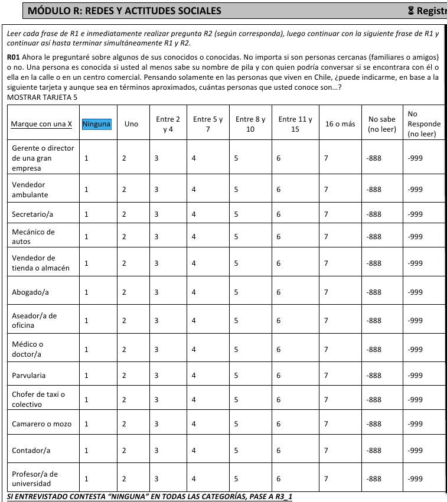
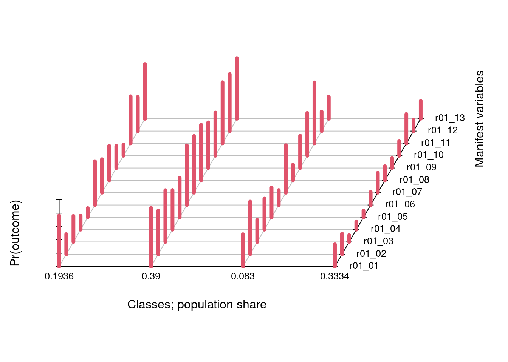
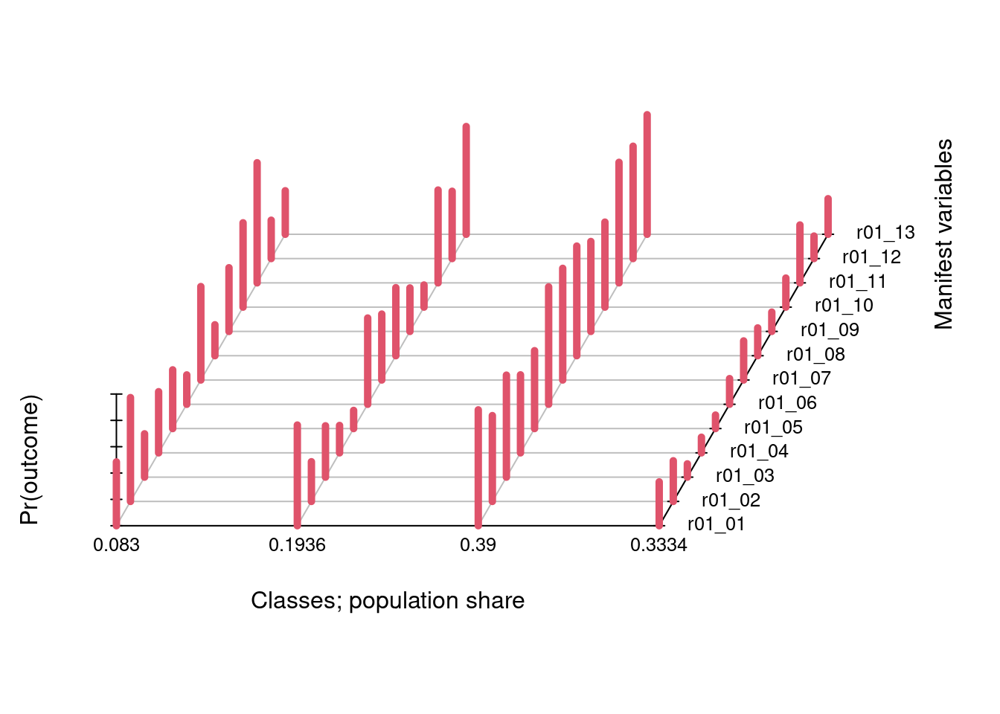
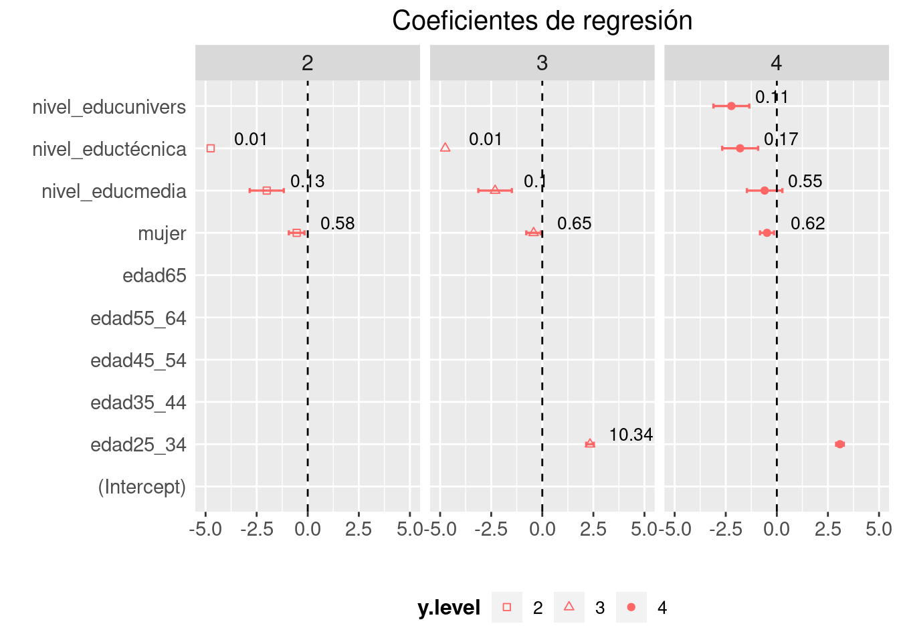
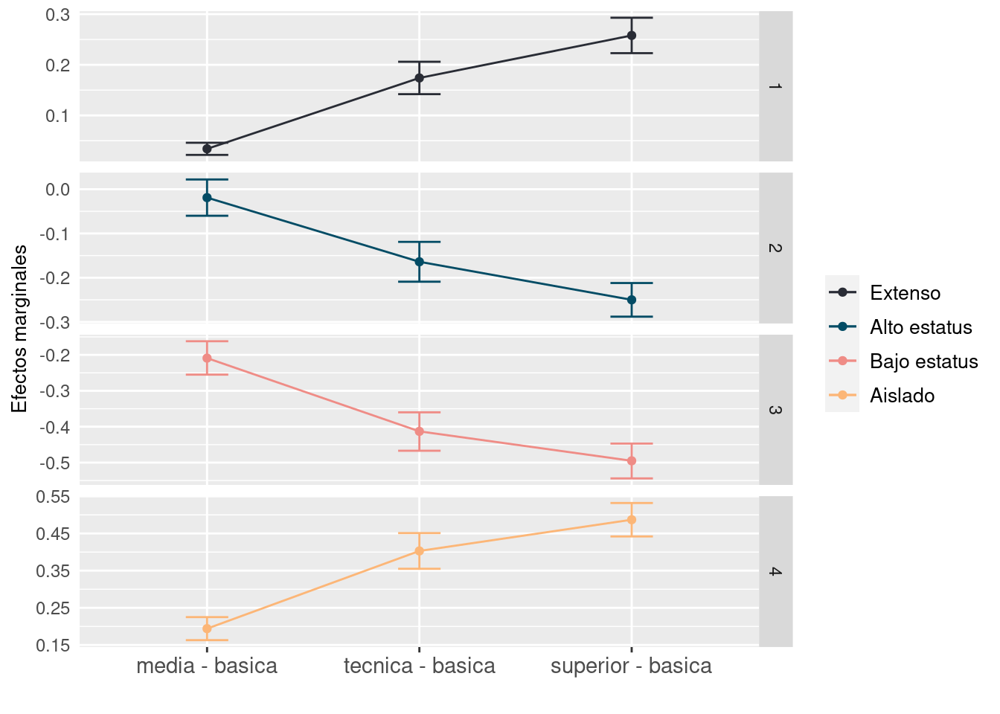

```{r, message=F}
# librerías
library(tidyverse)
library(tidymodels)
library(gtsummary)
library(marginaleffects)
library(kableExtra)
library(poLCA)
library(nnet)
library(httr)
```En este ejercicio vamos a utilizar nuevamente ELSOC en su versión 2018. En esta ocasión construiremos una variable categórica no ordenada en base a un procedimiento de clasificación denominado clases latentes. Luego de esto intentaremos describir la composición demogrpafica de los grupos emergentes por medio de una regresión multinomial.
En términos teóricos buscamos identificar patrones de interacción social (u ambientes sociales) (Kmetty et al. 2018), y los analizaremos teniendo en cuenta la teoría del capital social de Nan Lin (Lin 2002). Usaremos el instrumento denominado “Generador de posiciones” (Lin, Fu, and Hsung 2017) para al busqueda de estos patrones.
Kmetty, Zoltán, Róbert Tardos, Fruzsina Albert, and Beáta Dávid. 2018. “Mapping Social Milieus and Cohesion Patterns Between 1997 and 2014. Exploiting the Potential of the Occupational Position Generator.” Social Networks 55 (October): 116–29. https://doi.org/10.1016/j.socnet.2018.05.007.
Lin, Nan. 2002. Social Capital: A Theory of Social Structure and Action. 1. paperback ed. Structural Analysis in the Social Sciences 19. Cambridge: Cambridge Univ. Press.
Lin, Nan, Yang-chih Fu, and Ray-May Hsung. 2017. “The Position Generator: Measurement Techniques for Investigations of Social Capital.” In Social Capital, 57–81. Routledge.
Como sabemos el instrumento es el siguiente:

1 Librerías
2 Datos
```{r}
# datos
#ELSOC 2018
url <- "https://github.com/rcantillan/ricantillan.rbind.io/raw/main/dat/ELSOC/ELSOC_W01_v4.01_R.RData"
response <- GET(url)
local_path <- "ELSOC_W01_v4.01_R.RData"
writeBin(response$content, local_path)
load("ELSOC_W01_v4.01_R.RData")
```3 Seleccionamos y recodificamos variables
```{r}
a<-elsoc_2016%>%
mutate_at(vars(matches("r01")), ~ifelse(. > 1, 1, 2)) %>%
#mutate_at(vars(matches("c12")), ~ifelse(. > 1, 1, 2)) %>%
dplyr::mutate (conf_gral = case_when(c02 == 1 ~ 1,
c02 == 2 ~ 0,
c02 == 3 ~ 1)) %>%
dplyr::mutate (extranjero = case_when(m45 %in% 1 ~ 0,
m45 %in% 2 :8 ~ 1)) %>%
dplyr::mutate (mujer = case_when(m0_sexo == 1 ~ 0,
m0_sexo == 2 ~ 1)) %>%
dplyr::mutate (edad = case_when(m0_edad %in% 18:24 ~ "18_24",
m0_edad %in% 25:34 ~ "25_34",
m0_edad %in% 35:44 ~ "35_44",
m0_edad %in% 45:54 ~ "45_54",
m0_edad %in% 55:64 ~ "55_64",
m0_edad %in% 65:88 ~ "65")) %>%
dplyr::mutate (nivel_educ = case_when(m01 %in% 1 :3 ~ "básica",
m01 %in% 4 :5 ~ "media",
m01 %in% 6 :7 ~ "técnica",
m01 %in% 8 :10 ~ "univers")) %>%
dplyr::select(idencuesta, mujer, edad, nivel_educ,
r01_01, r01_02, r01_03, r01_04, r01_05, r01_06, r01_07, r01_08, r01_09, r01_10,
r01_11, r01_12, r01_13)
# set NA
a[a=="-999"] <- NA
a[a=="-888"] <- NA
# delete NA in covariable
a<-a %>% drop_na(mujer, edad, nivel_educ,
r01_01, r01_02, r01_03, r01_04, r01_05, r01_06, r01_07, r01_08, r01_09, r01_10,
r01_11, r01_12, r01_13)
```4 Clasificamos (LCA)
# usamos poLCA para realizar la clasificación
f <- cbind(r01_01, r01_02, r01_03, r01_04, r01_05, r01_06, r01_07, r01_08, r01_09, r01_10,
r01_11, r01_12, r01_13) ~ mujer + edad + nivel_educ
# generamos los modelos de clases latentes
lca1 <- poLCA(f,a,nclass=1,graphs=F)
lca2 <- poLCA(f,a,nclass=2,graphs=F)
lca3 <- poLCA(f,a,nclass=3,graphs=F)
lca4 <- poLCA(f,a,nclass=4,graphs=T) # óptima. 
lca5 <- poLCA(f,a,nclass=5,graphs=F)
lca6 <- poLCA(f,a,nclass=6,graphs=F)5 Evaluamos ajuste
```{r}
## Estadísticos de ajuste (todos los modelos)
AIC.1 <-as.numeric(lca1$aic)
AIC.2 <-as.numeric(lca2$aic)
AIC.3 <-as.numeric(lca3$aic)
AIC.4 <-as.numeric(lca4$aic)
AIC.5 <-as.numeric(lca5$aic)
AIC.6 <-as.numeric(lca6$aic)
BIC.1 <-as.numeric(lca1$bic)
BIC.2 <-as.numeric(lca2$bic)
BIC.3 <-as.numeric(lca3$bic)
BIC.4 <-as.numeric(lca4$bic)
BIC.5 <-as.numeric(lca5$bic)
BIC.6 <-as.numeric(lca6$bic)
llik.1 <-as.numeric(lca1$llik)
llik.2 <-as.numeric(lca2$llik)
llik.3 <-as.numeric(lca3$llik)
llik.4 <-as.numeric(lca4$llik)
llik.5 <-as.numeric(lca5$llik)
llik.6 <-as.numeric(lca6$llik)
chisq.1 <- as.numeric(lca1$Chisq)
chisq.2 <- as.numeric(lca2$Chisq)
chisq.3 <- as.numeric(lca3$Chisq)
chisq.4 <- as.numeric(lca4$Chisq)
chisq.5 <- as.numeric(lca5$Chisq)
chisq.6 <- as.numeric(lca6$Chisq)
G.1 <- as.numeric(lca1$Gsq)
G.2 <- as.numeric(lca2$Gsq)
G.3 <- as.numeric(lca3$Gsq)
G.4 <- as.numeric(lca4$Gsq)
G.5 <- as.numeric(lca5$Gsq)
G.6 <- as.numeric(lca6$Gsq)
n.obs1 <- as.numeric(lca1$Nobs)
n.obs2 <- as.numeric(lca2$Nobs)
n.obs3 <- as.numeric(lca3$Nobs)
n.obs4 <- as.numeric(lca4$Nobs)
n.obs5 <- as.numeric(lca5$Nobs)
n.obs6 <- as.numeric(lca6$Nobs)
#Creación de Vectores para TABLA DE COMPARACIÓN
AIC <- c(AIC.1,AIC.2,AIC.3,AIC.4,AIC.5,AIC.6)
BIC <- c(BIC.1,BIC.2,BIC.3,BIC.4,BIC.5,BIC.6)
llik <- c(llik.1,llik.2,llik.3,llik.4,llik.5,llik.6)
chi.cuadrado <- c(chisq.1,chisq.2,chisq.3,chisq.4,chisq.5,chisq.6)
G2 <- c(G.1,G.2,G.3,G.4,G.5,G.6)
N <- c(n.obs1,n.obs2,n.obs3,n.obs4,n.obs5,n.obs6)
Modelos <- c("1 clase", "2 clases", "3 clases", "4 clases", "5 clases","6 clases")
#CREACIÓN TABLA ESTADÍSTICOS DE AJUSTE MODELOS TODAS LAS VARIABLES
fit.indices <- data.frame(Modelos,AIC,BIC,llik,chi.cuadrado,G2,N)
knitr::kable(fit.indices, caption = "Indicadores de ajuste de los modelos")
```| Modelos | AIC | BIC | llik | chi.cuadrado | G2 | N |
|---|---|---|---|---|---|---|
| 1 clase | 50664.58 | 50742.31 | -25319.29 | 150705.82 | 11479.983 | 2919 |
| 2 clases | 45340.10 | 45555.35 | -22634.05 | 12522.56 | 6040.595 | 2919 |
| 3 clases | 43842.59 | 44195.35 | -21862.30 | 11225.35 | 5152.400 | 2919 |
| 4 clases | 43872.92 | 44363.20 | -21854.46 | 10236.61 | 5062.604 | 2919 |
| 5 clases | 50373.06 | 51000.85 | -25081.53 | 60055.10 | 9663.572 | 2919 |
| 6 clases | 50550.61 | 51315.92 | -25147.31 | 130158.43 | 11162.861 | 2919 |
6 Reordenamos las clases
```{r, results = "hide"}
#Extraer valores de inicio (modelo seleccionado)
probs.start<-lca4$probs.start
#lca4$probs.start
#Reordnar clases, si es necesario
new.probs.start<-poLCA.reorder(probs.start, c(3,1,2,4))
#Reanalizar con gráficos
lca4<-poLCA(f, a, nclass=4, probs.start=new.probs.start, graphs=T, na.rm=TRUE, maxiter=3000)
```
7 Agregar columna de clasificación
```{r}
a_lca <- cbind(a, "lclass" = lca4$predclass)
a_lca$lclass <- as.factor(a_lca$lclass) # definir factor
```8 Modelo multinomial
```{r}
model_fit <- multinom_reg() |>
fit(lclass ~ mujer + edad + nivel_educ, trace=F, data=a_lca)
```9 Extraer información
```{r}
data_model_plot <- tidy(model_fit, exponentiate = FALSE, conf.int = TRUE) |>
mutate_if(is.numeric, round, 4) |>
dplyr::select(-std.error, -statistic)
``````{r}
data_model_plot %>%
mutate(rr = round(exp(estimate), 2)) %>% # calcular riesgo relativo
ggplot(aes(y = term, x = estimate, pch = y.level, label = rr)) +
geom_point(aes(y = term, x=estimate), color= "#FF6666") +
geom_errorbarh(aes(xmax = conf.high, xmin = conf.low, height = .12), color ="#FF6666",size = 0.6) +
geom_vline(xintercept =0, linetype = "dashed") +
scale_shape_manual(values = c(0,2,19)) +
geom_text(size = 3.5, nudge_x = 2,vjust = -0.25) +
facet_grid(.~y.level) +
scale_x_continuous(limits=c(-5,5)) +
theme_gray()+
theme(legend.position = "bottom",
axis.ticks.y=element_blank(),
strip.text.x = element_text(size = 12), # size label facet_grid (grupos)
#legend.position = "right",
plot.title = element_text(hjust = 0.5, size = 15),
axis.title = element_text(size=10),
axis.text.x = element_text(size=11),
axis.text.y = element_text(size = 11),
legend.text = element_text(size = 10),
legend.title = element_text(face = "bold", size = 12)) +
#guides(pch=guide_legend(title="Patrones")) +
ylab("") +
xlab("") +
ggtitle("Coeficientes de regresión") +
scale_y_discrete(limits=rev) +
scale_y_discrete(limits = c(
))
```
10 Pivot tabla
```{r}
## Table
set.seed(20210511)
multinom_pivot_wider <- function(x) {
if (!inherits(x, "tbl_regression") || !inherits(x$model_obj, "multinom")) {
stop("`x=` must be class 'tbl_regression' summary of a `nnet::multinom()` model.")
}
# check inputs match expectatations
# create tibble of results
df <- tibble::tibble(outcome_level = unique(x$table_body$groupname_col))
df$tbl <-
purrr::map(
df$outcome_level,
function(lvl) {
gtsummary::modify_table_body(
x,
~dplyr::filter(.x, .data$groupname_col %in% lvl) %>%
dplyr::ungroup() %>%
dplyr::select(-.data$groupname_col)
)
}
)
tbl_merge(df$tbl, tab_spanner = paste0("**", df$outcome_level, "**"))
}
``````{r}
tbl <-
nnet::multinom(lclass ~ mujer + edad + nivel_educ, trace=F, data=a_lca) %>%
tbl_regression(exponentiate = F) %>% multinom_pivot_wider()
tbl
```| Characteristic | 2 | 3 | 4 | ||||||
|---|---|---|---|---|---|---|---|---|---|
| log(OR)1 | 95% CI1 | p-value | log(OR)1 | 95% CI1 | p-value | log(OR)1 | 95% CI1 | p-value | |
| mujer | -0.54 | -0.92, -0.16 | 0.006 | -0.42 | -0.78, -0.07 | 0.020 | -0.48 | -0.82, -0.14 | 0.006 |
| edad | |||||||||
| 18_24 | — | — | — | — | — | — | |||
| 25_34 | -15 | -15, -15 | <0.001 | 2.3 | 2.1, 2.5 | <0.001 | 3.1 | 2.9, 3.3 | <0.001 |
| 35_44 | -16 | -17, -16 | <0.001 | -16 | -16, -15 | <0.001 | -15 | -15, -15 | <0.001 |
| 45_54 | -17 | -17, -16 | <0.001 | -16 | -17, -16 | <0.001 | -15 | -16, -15 | <0.001 |
| 55_64 | -16 | -16, -15 | <0.001 | -15 | -16, -15 | <0.001 | -14 | -15, -14 | <0.001 |
| 65 | -18 | -19, -18 | <0.001 | -17 | -18, -17 | <0.001 | -17 | -17, -17 | <0.001 |
| nivel_educ | |||||||||
| básica | — | — | — | — | — | — | |||
| media | -2.0 | -2.8, -1.2 | <0.001 | -2.3 | -3.1, -1.5 | <0.001 | -0.60 | -1.5, 0.27 | 0.2 |
| técnica | -4.8 | -5.6, -3.9 | <0.001 | -4.7 | -5.6, -3.9 | <0.001 | -1.8 | -2.7, -0.92 | <0.001 |
| univers | -6.9 | -7.9, -5.9 | <0.001 | -5.8 | -6.7, -5.0 | <0.001 | -2.2 | -3.1, -1.3 | <0.001 |
| 1 OR = Odds Ratio, CI = Confidence Interval | |||||||||
11 Efectos marginales
```{r}
m1 <- multinom(lclass ~ mujer + edad + nivel_educ, trace=F, data=a_lca)
#summary(m1)
``````{r}
me<-marginaleffects(m1, type = "probs")%>% summary() %>% filter(term=="nivel_educ")
#summary(margins::margins(nnet::multinom(lclass ~ idregion+h3+e4r, data=a_lca_2017), vce="bootstrap"))
#me
me$estimate<-round((me$estimate),3)
me$std.error<-round((me$std.error),3)
me$statistic<-round((me$statistic),3)
me$p.value<-round((me$p.value),3)
me$conf.low<-round((me$conf.low),3)
me$conf.high<-round((me$conf.high),3)
``````{r}
#tabla
me$term<-NULL
me %>%
kbl(caption = "", booktabs = T) %>%
kable_classic(full_width = F, html_font = "Cambria")%>%
column_spec(c(3,6), bold = T, color = "black")
```| group | contrast | estimate | std.error | statistic | p.value | conf.low | conf.high |
|---|---|---|---|---|---|---|---|
| 1 | mean(media) - mean(básica) | 0.034 | 0.006 | 5.591 | 0.000 | 0.022 | 0.046 |
| 1 | mean(técnica) - mean(básica) | 0.174 | 0.017 | 10.525 | 0.000 | 0.142 | 0.206 |
| 1 | mean(univers) - mean(básica) | 0.258 | 0.018 | 14.401 | 0.000 | 0.223 | 0.293 |
| 2 | mean(media) - mean(básica) | -0.019 | 0.021 | -0.902 | 0.367 | -0.060 | 0.022 |
| 2 | mean(técnica) - mean(básica) | -0.164 | 0.023 | -7.083 | 0.000 | -0.209 | -0.119 |
| 2 | mean(univers) - mean(básica) | -0.250 | 0.019 | -12.814 | 0.000 | -0.288 | -0.212 |
| 3 | mean(media) - mean(básica) | -0.209 | 0.024 | -8.830 | 0.000 | -0.255 | -0.162 |
| 3 | mean(técnica) - mean(básica) | -0.413 | 0.027 | -15.063 | 0.000 | -0.467 | -0.360 |
| 3 | mean(univers) - mean(básica) | -0.495 | 0.025 | -19.978 | 0.000 | -0.544 | -0.447 |
| 4 | mean(media) - mean(básica) | 0.194 | 0.016 | 12.192 | 0.000 | 0.163 | 0.225 |
| 4 | mean(técnica) - mean(básica) | 0.403 | 0.024 | 16.515 | 0.000 | 0.355 | 0.451 |
| 4 | mean(univers) - mean(básica) | 0.487 | 0.023 | 21.104 | 0.000 | 0.442 | 0.532 |
12 Recodificar
```{r}
me$contrast<-as.factor(me$contrast)
me <- me %>%
mutate(
contrast = case_when(
contrast == "mean(media) - mean(básica)" ~ "media - basica",
contrast == "mean(técnica) - mean(básica)" ~ "tecnica - basica",
contrast == "mean(univers) - mean(básica)" ~ "superior - basica",
TRUE ~ as.character(contrast) # Mantener los valores originales si no hay coincidencia
)
)
me$contrast <- factor(me$contrast, levels=c("media - basica", "tecnica - basica", "superior - basica"))
```13 Plot efectos marginales
```{r}
me %>%
ggplot(aes(x =contrast, y= estimate, col = group)) +
geom_point() +
geom_line(aes(group=group))+
geom_errorbar(aes(ymin = conf.low, ymax = conf.high), alpha = 1, width=0.2)+
facet_grid(group ~ ., scales = "free")+
scale_color_manual(values = c("#292c35",
"#034c65",
"#ef8c86",
"#fcb677"),
name = "",
labels = c('Extenso', 'Alto estatus', 'Bajo estatus','Aislado'))+
xlab("") +
ylab("Efectos marginales")+
theme(axis.ticks.y=element_blank(),
legend.position = "right",
plot.title = element_text(hjust = 0.5, size = 9),
axis.title = element_text(size=10),
axis.text.x = element_text(size=11),
axis.text.y = element_text(size = 9),
legend.text = element_text(size = 10),
legend.title = element_text(face = "bold",
size = 10))
```